01
X-model
平沢進さんの曲をベースにした、「音を光で表現する」をテーマとする実験的コピープロジェクト
Live
ライブ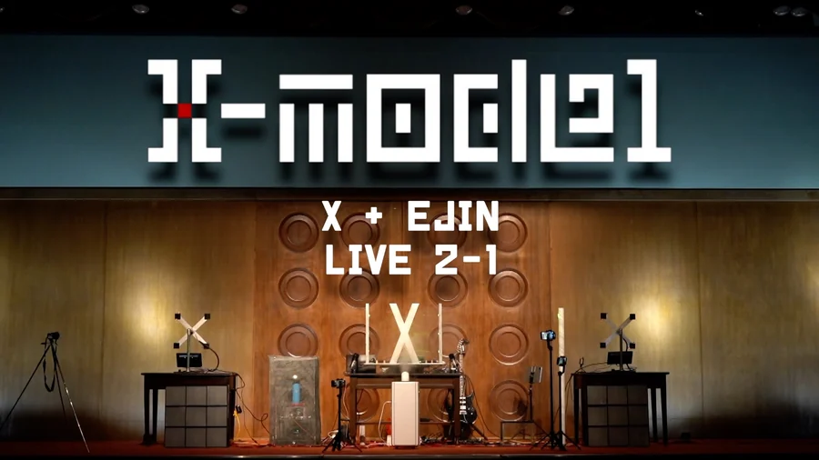
LIVE 2-1
高校１回目のライブ
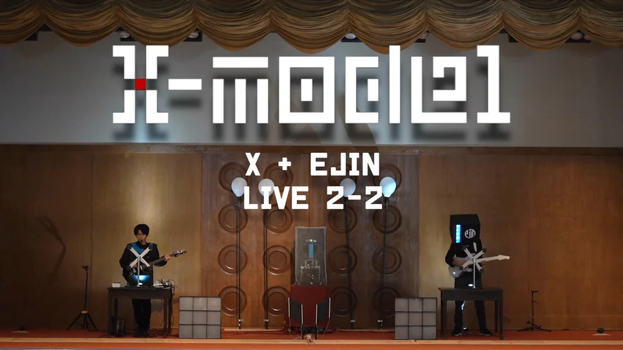
LIVE 2-2
高校２回目のライブ
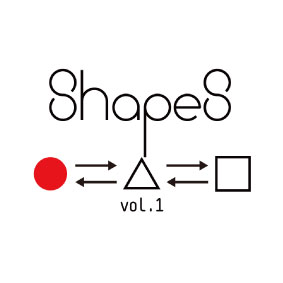
Shapes vol.1 ○circle
大学一年生でのライブ
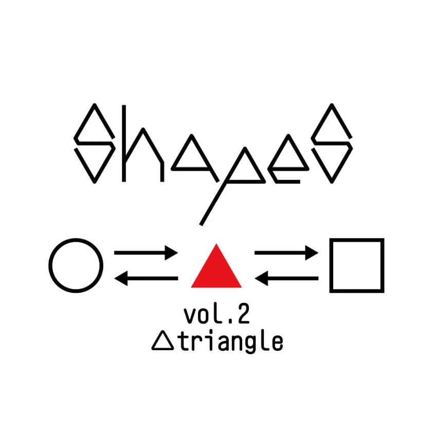
Shapes vol.2 △triangle
大学二年生でのライブ
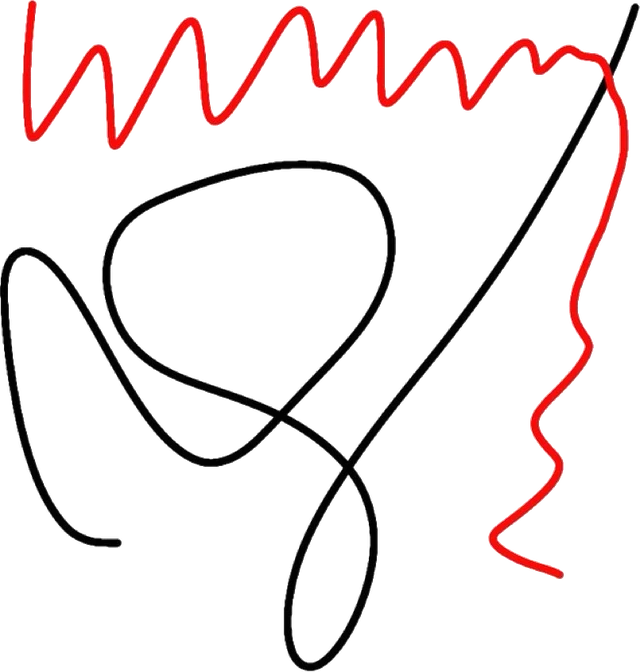
平沢進さんの曲をベースにした、「音を光で表現する」をテーマとする実験的コピープロジェクト

高校１回目のライブ

高校２回目のライブ

大学一年生でのライブ

大学二年生でのライブ
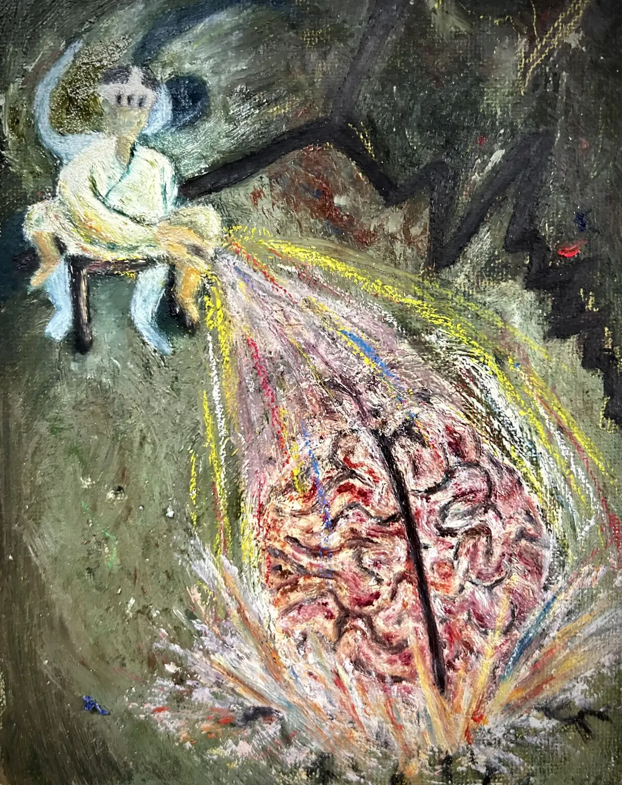
夢野久作『ドグラ・マグラ』の作中論文「脳髄は物を考える処に非ず」から着想を得たVR作品。作中では、脳髄は物を考える場所ではなく、全身の細胞がやりとりする情報の中継所にすぎないと語られる。 本作の体験者は、仮想空間の中で自分の脳髄を掴み取り、投げ捨てることができる。脳を手放してもなお続いていく意識を通して、「考えているのは本当に脳なのか」を身体で問い直す。
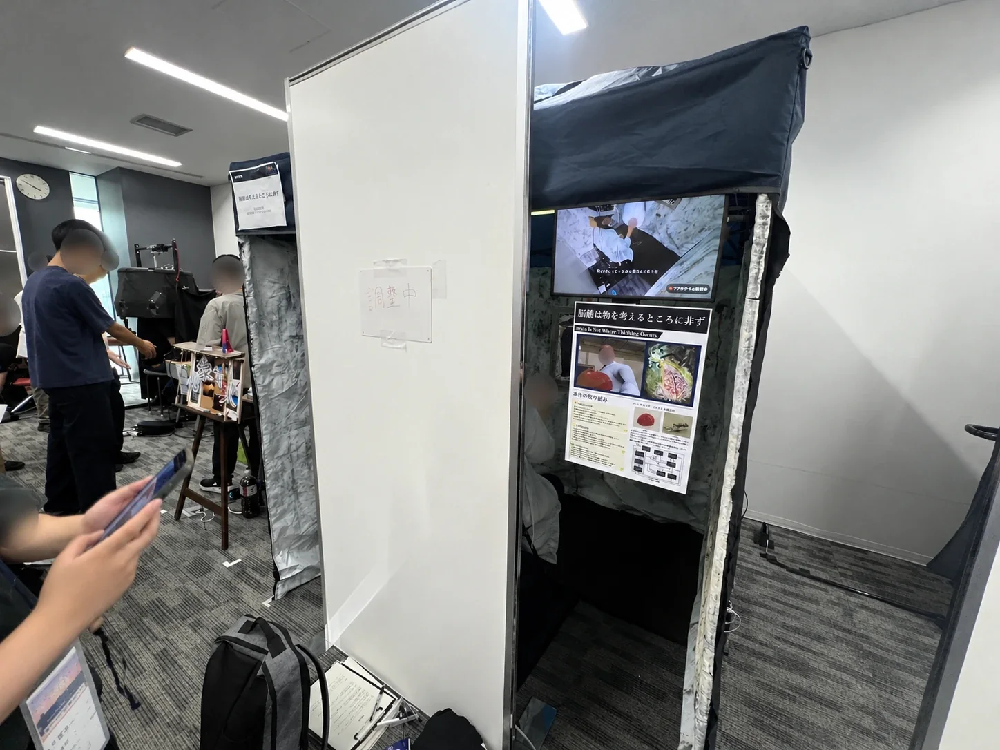
VR学会賞・CRI・ミドルウェア賞 受賞
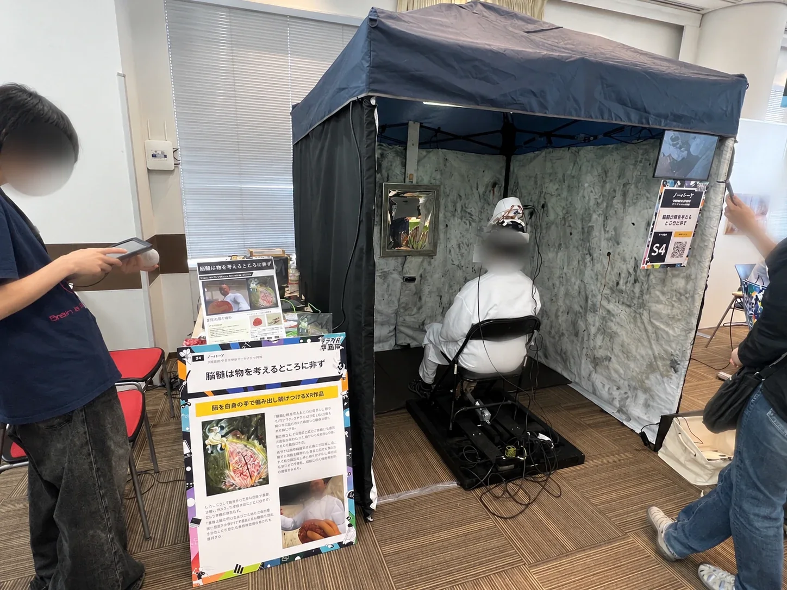
企業賞 受賞（詳細は公式発表後に追記）
ほかのコンペにも応募中です。
結果が出しだい、ここに追加していきます。
映像、アニメーション、ゲーム、グラフィック、インスタレーション、インタラクティブアートなど
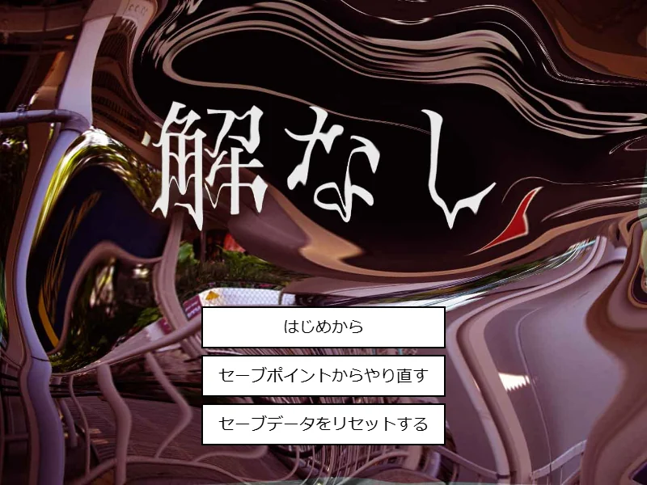
p5.js / JavaScript
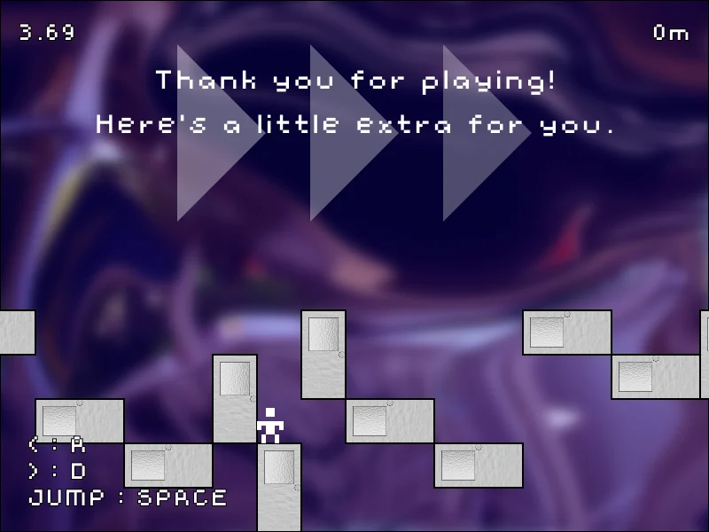
p5.js / JavaScript
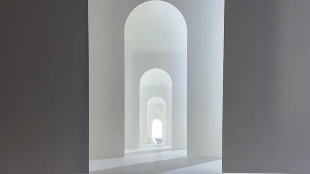
映像 / 編集

身体の不随意運動を打撃音に変換する

声から、その人だけの曼荼羅を生成する
私は、目に見えないもの、意識の外にあるものを、別のかたちに変換して捉え直すことを軸に制作しています。
音や声、身体の動きといった、普段は通り過ぎてしまう感覚を、光や図形、音、体験へと置き換えることで、そこに含まれている質感やリズム、感情を、もう一度感じ取れるかたちにすることを目指しています。
また、自分自身の記憶や夢、身体の感覚を出発点に、言葉にしにくい心の揺らぎや静かな思いを、物語や体験として立ち上げることにも取り組んでいます。
制作の中心にあるのは、センサーやデバイスを自ら設計・製作するハードウェアの表現です。そこを足場に、映像やゲーム、XR など、作品に合わせて手段を広げながら、現実と空想、意識と無意識の境界にあるような曖昧さを大切に、見る人にそっと感情が届くような作品づくりを心がけています。